강연 전문 · 오늘도 나는 메타버스로 출근합니다
슬라이드에는 글자가 거의 없고 말할 내용이 발표자 노트에 있다. 그래서 노트를 본문으로 놓고 장표를 그 사이에 끼웠다. 노트가 붙어 있는 열네 장만 싣는다.
노트는 7월 17일 재저장판에서, 장표 이미지는 6월 18일 내보내기에서 가져왔다. 두 판이 갈리는 장은 1·13·51 셋뿐이고 여기 실은 열네 장은 그 밖이다.
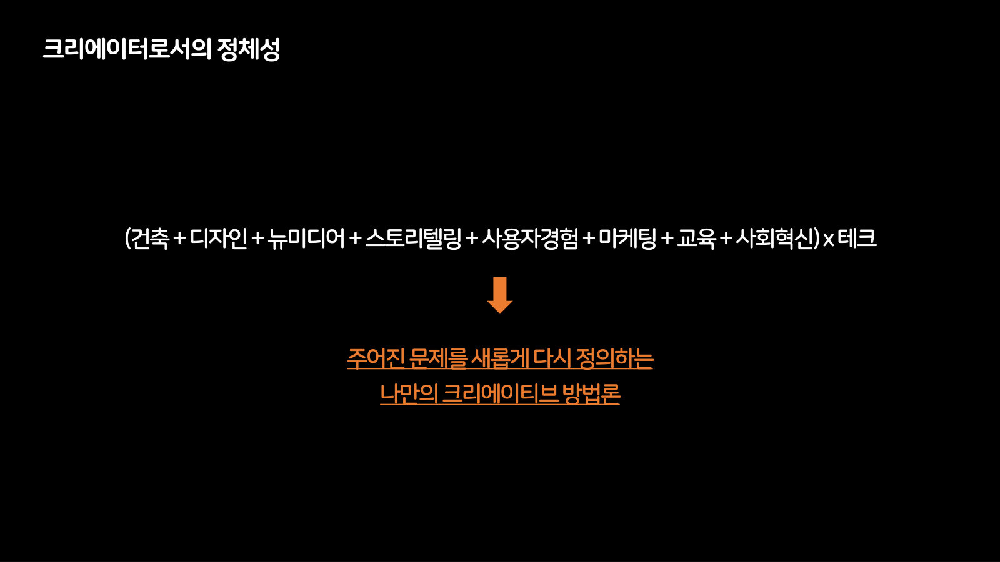
저를 간략하게 설명하기가 쉽지는 않은데
2008년부터 프리랜서의 형태로 일하면서 크리에이터라는 이름으로 살아가고 있구요
건축, 디자인, 뉴미디어 등등 다수 영역을 융합하는 방식으로 결과물을 만들어왔고
특별히 각각 영역과 테크놀로지의 접점을 발굴해가며 재밌는 실험을 이어왔습니다.
여기서의 크리에이티브 방법론은 미래에 대한 예측, 혁신을 위한 탐구의 과정에서 문제를 새롭게 정의하고 해결하는 저만의 문제 해결 방법을 의미합니다.
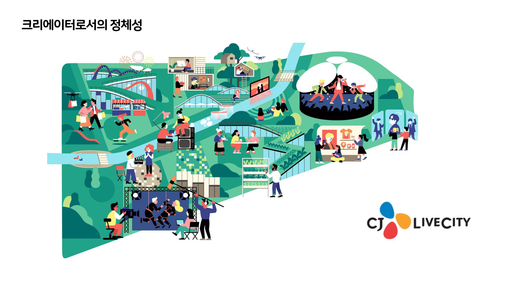
제가 많이 활동했던 테마파크라고 하는 조금은 특수한 분야인데요
기업의 전략과 방향성을 수립하거나
서비스나 콘텐츠를 기획하는 일에서부터 직접 공간을 디자인하고 시나리오를 작성하는 일
나아가서는 디지털 디바이스에서부터 인프라 설계하는 일에 이르기까지 다양한 역할을 수행했습니다.
현재 진행 중인 국내 대형 실내형 테마파크 프로젝트
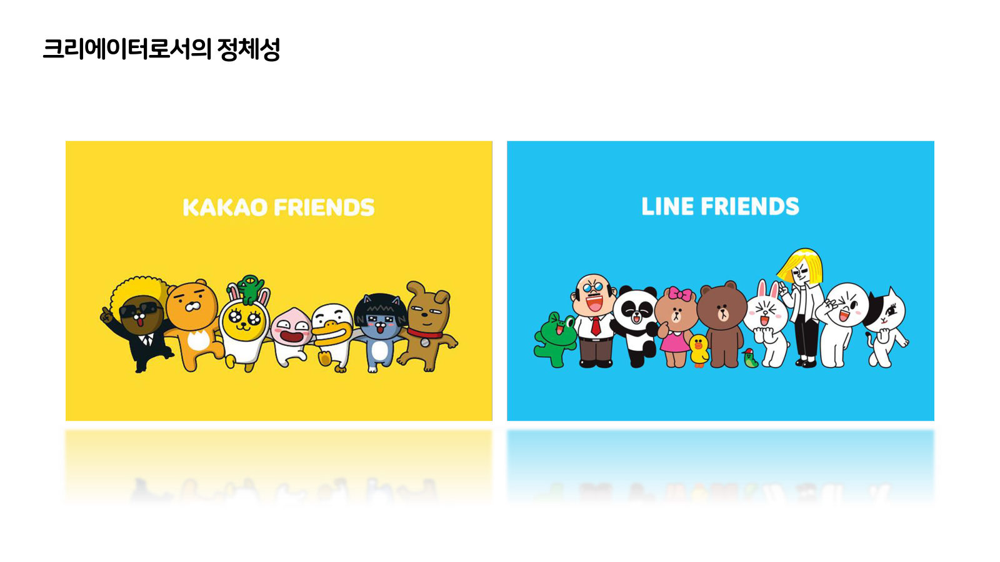
인기 캐릭터 IP 기반의 실내형 테마파크
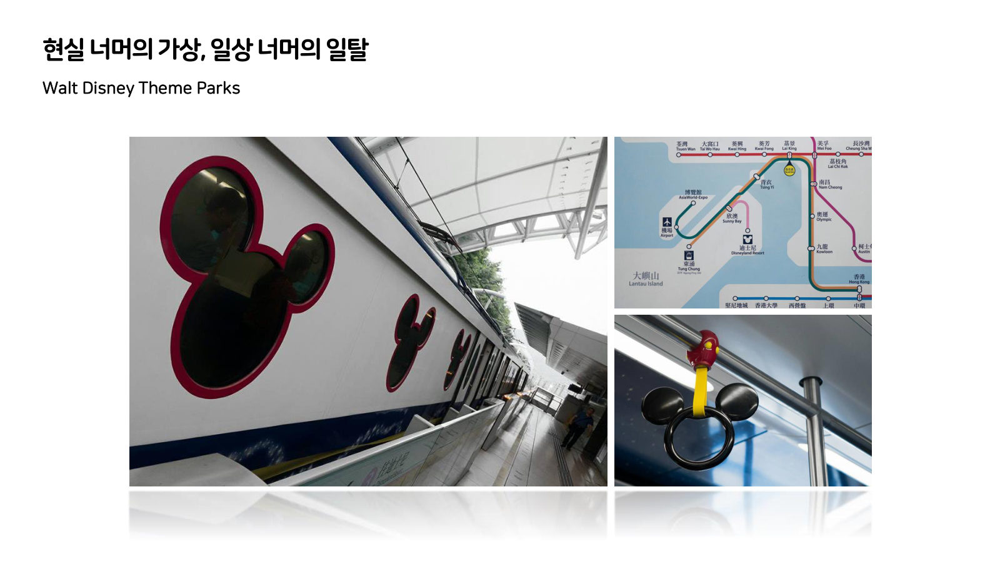
다수의 프로젝트를 진행하면서 여러 나라의 수많은 테마파크를 방문해볼 기회가 있었는데
사진에서와 같은 일상과의 접점에서의 교통수단에서부터
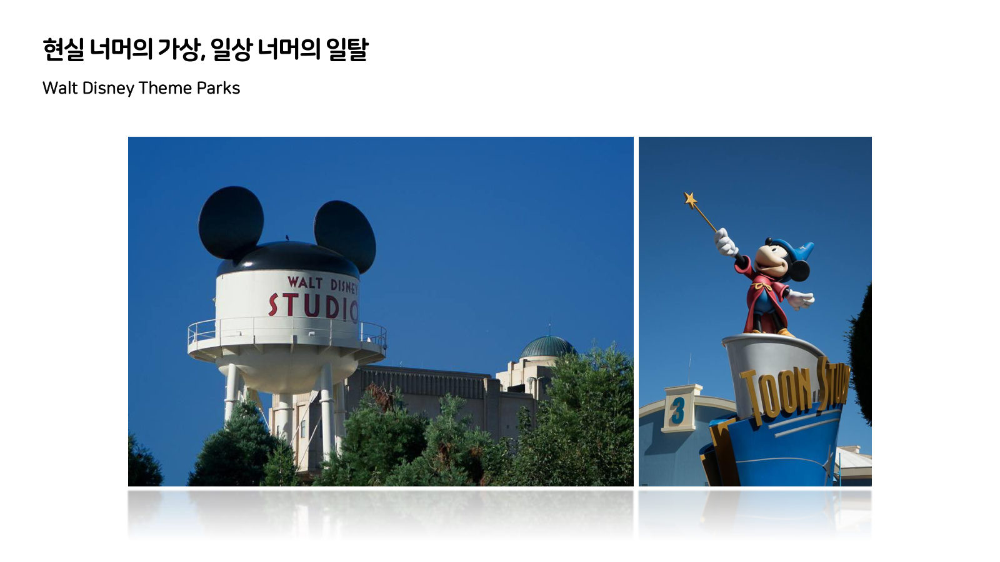
테마파크 제작과 관련한 백스테이지의 이야기를 경험할 수 있는 스튜디오 시설
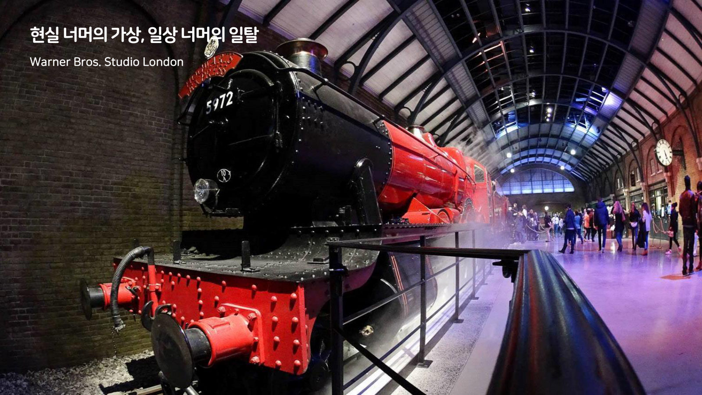
앞서의 공간들이 아직은 현실의 일상 공간이었다고 한다면
많은 분들이 좋아하시는 해리포터의 세계관에서와 같이
가상세계로 진입하는 통로 역할의 기차 플랫폼
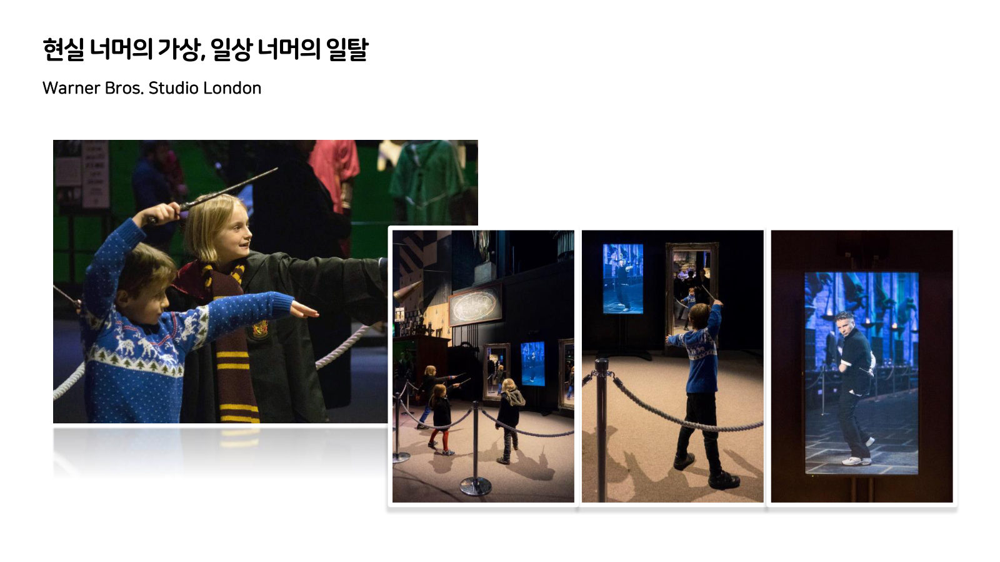
거울 속의 마법사를 통해 진지하게 마법 훈련에 참여하는 아이들도 만나보기도 했습니다.
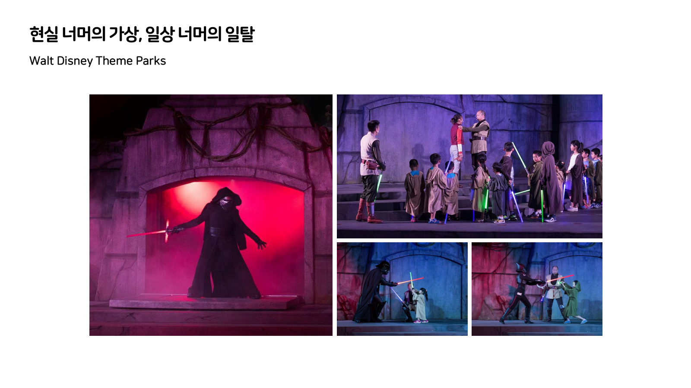
스타워즈를 좋아하시는 분들도 많이 계실텐데요
직접 제다이가 되어 포스와 광선검으로 세상을 지켜내는 아이들의 모습도 감상할 수 있었습니다.
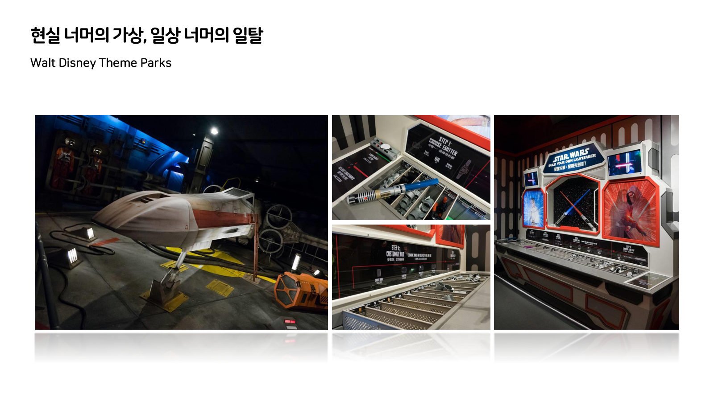
테마파크에서의 이러한 경험은 스토어에서 판매되는 다양한 상품들을 통해
다시 현실의 일상에서의 역할극 상황으로 이어지기도 하죠.
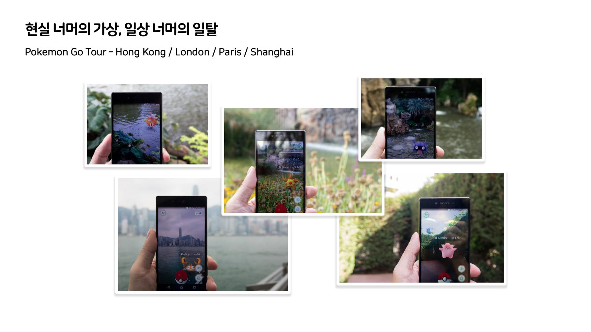
전 세계 여러나라의 테마파크를 방문하면서 당시 한창 인기 있던 게임인 포켓몬고의 포켓몬들을 가상의 물리세계 위에 비춰가며 열심히 사진을 찍어서 SNS에 포스팅했던 기억이 나기도 합니다.
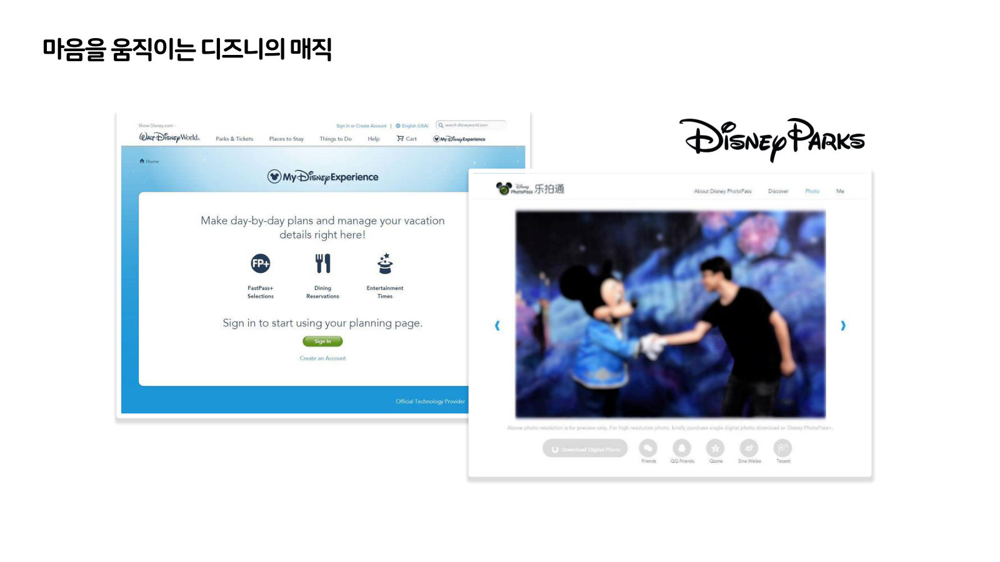
테마파크에 관심을 가지게 된 계기는 업무로서의 프로젝트 때문이었지만
어느 순간 진심으로 테마파크에 대한 애정이 커지게 되었습니다.
그 중에서도 이 분야의 최고 플레이어인 디즈니라는 브랜드에 대한 관심이 커졌는데
테마파크를 방문하기 수개월 전, 티켓을 예약할 때의 설렘에서부터
테마파크 개장 시간 전에 도착해서 흥분된 마음으로 입장을 기다리던 순간,
다시 일상으로 돌아와 촬영한 사진들을 정성껏 정리할 때의 감정들까지
일상과 일탈, 현실과 가상을 넘나들며 경험되는 디즈니라는 브랜드에 대한 경험은
다른 어떤 것과 비교하더라도 매우 특별했던 경험으로 기억됩니다.
디즈니의 테마파크는 1955년에 미국 애너하임에 처음 디즈니랜드 개장을 시작으로 전세계로 확산되었는데
이후 테마파크를 넘어, 상업, 호텔, 크루즈 등 다양한 산업으로 확대되며 리조트의 개념을 구현하였고
최근에는 온라인 콘텐츠 중심의 디즈니 플러스를 통해 과거의 IP를 되살려냄으로써 점차 점유율을 높여가는 중입니다.
디즈니의 테마파크를 경험하면서 가장 인상적이었던 점은 최고의 기술로 무장된 첨단의 시설임에도 불구하고 그것을 철저하게 숨긴다는 점
마지막에 게스트를 향해 말을 건내고 따뜻하게 안아주는 것은 게스트라고 불리는 디즈니 테마파크의 구성원들이라는 점입니다.
아무리 화려한 어트랙션과 쇼를 경험했다고 해도 미키마우스와 단둘이 마주하는 순간만큼 특별하지는 않죠.
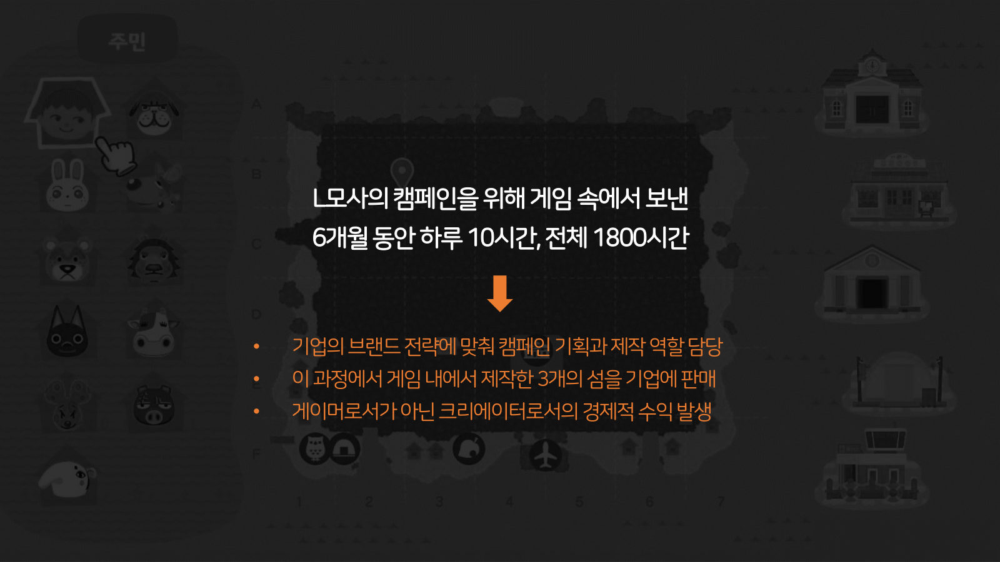
섬을 기업에 판매하면서 프로젝트를 마무리
경재적 수익을 거두게 됨
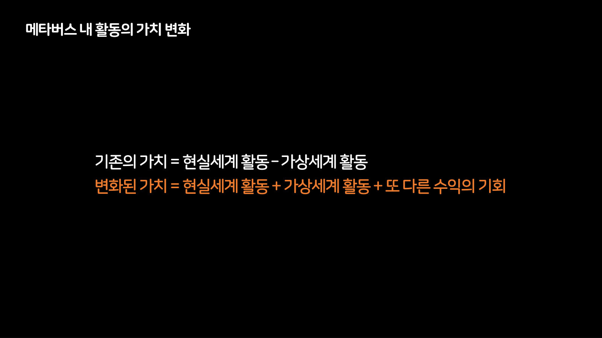
메타버스라는 개념 내에서의 경험들이 점차 확산됨에 따라
그 곳에서 우리가 보내는 시간에 대한 가치도 새롭게 변화하고 있습니다.
이전까지는 가상세계의 활동을 현실세계를 방해하고 그곳에서의 시간을 뺴앗는 것으로 인식했으나
메타버스에서의 활동에 대한 인식이 변화해감에 따라 현실세계의 활동과 가상세계의 활동이 동시적으로 가치를 만들어낼 수 있다고 평가하는 한편,
그로부터 시작되는 부가적인 수익의 기회까지 더해저 전보다 더 많은 것이 하나의 가치로 담길 수 있다는 생각이 보편화되는 모습이죠.
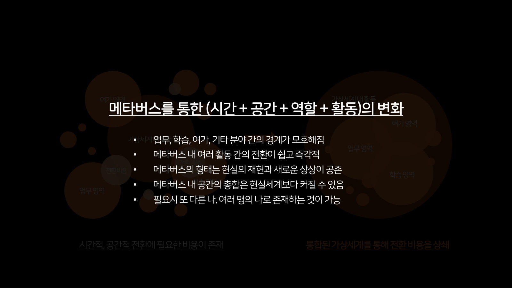
메타버스에서 생겨나는 가치에 대한 인식이 변화해감에 따라
그 안에서
아바타의 크기를 기준으로 메타버스 공간을 산정
적은 비용으로 무한대로 확장 가능